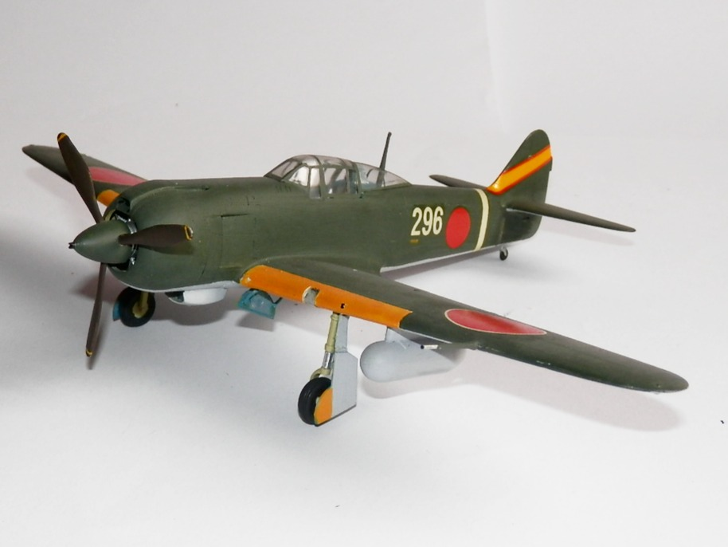
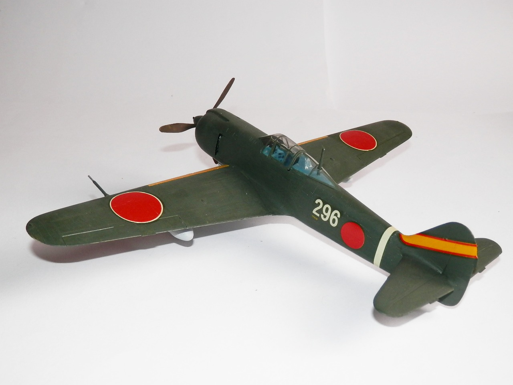

Aerei · scale model archive
Kawasaki Ki100
Kawasaki Ki100 — Kit: Arii, Scale: 1/48. In early 1945, 275 Ki-100s were modified from Ki-61s as an emergency measure to accept a 14-cylinder Mitsubishi…

Photo gallery

English description
In early 1945, 275 Ki-100s were modified from Ki-61s as an emergency measure to accept a 14-cylinder Mitsubishi Ha-112-II radial engine in place of the original Kawasaki Ha-40 inverted V-12 inline engine, resulting in one of the best interceptors used by the Army during the war. It combined excellent power and maneuverability, and from the first operational missions in March 1945 until the end of the war, it performed better than most IJAAS fighters.
Descrizione italiana
All’inizio del 1945, 275 Ki-100 furono ricavati da Ki-61 modificati in emergenza per accogliere un motore radiale Mitsubishi Ha-112-II a 14 cilindri al posto dell’originario motore in linea raffreddato a liquido. Un esempio molto efficace di adattamento riuscito.